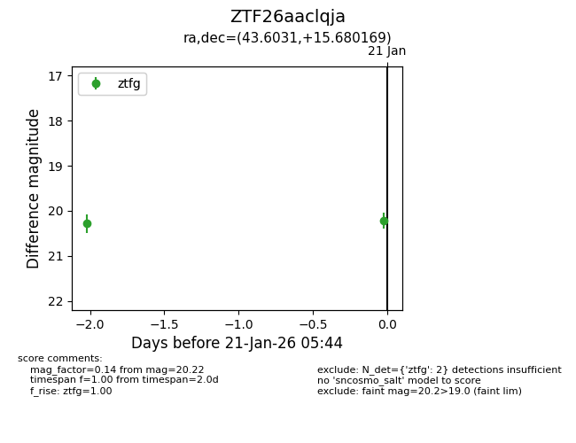
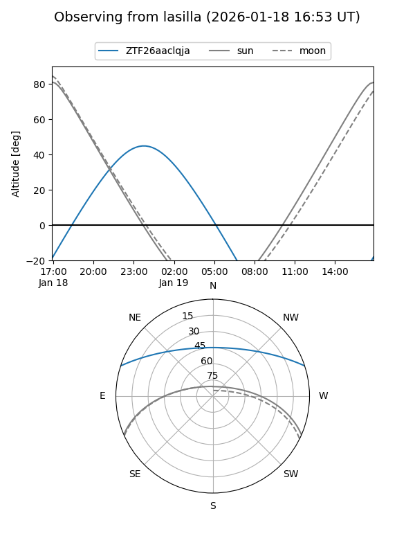
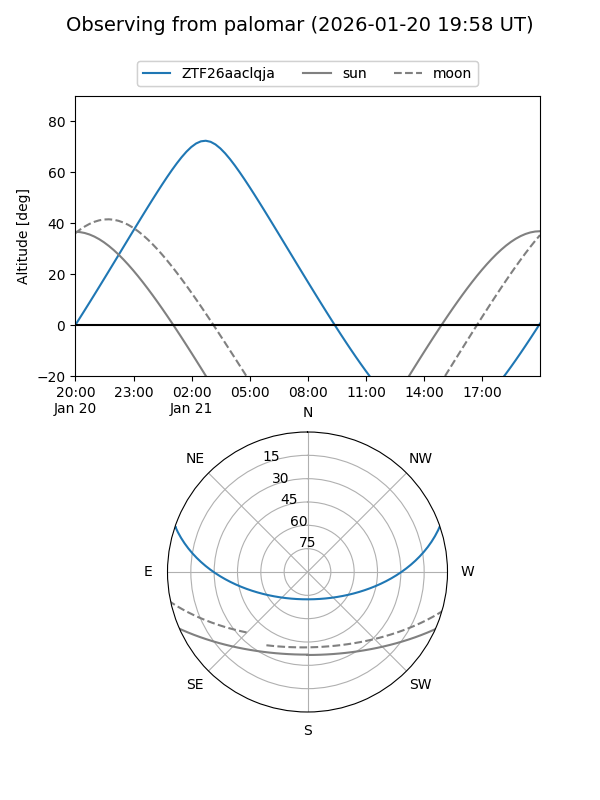

ZTF26aaclqja
Target ZTF26aaclqja at 2026-01-21 05:56
Aliases and brokers:
FINK: link
Lasair: link
ALeRCE: link
alt names
ZTF26aaclqja (ztf,fink_ztf)
Coordinates:
equatorial (ra, dec) = 43.6031,+15.68017
equatorial (HMS+DMS) = 02:54:24.73,+15:40:48.61
galactic (l, b) = (161.4723,-37.82190)
Flags:
Photometry:
last ztfg=20.22
2 ztfg detections
Lightcurve

Visibility


Additional plots